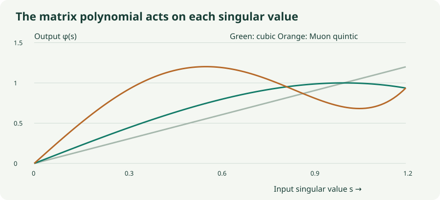

Muon, Part 2: Newton–Schulz Without the Mystery
Derive the cubic iteration, inspect Muon’s quintic approximation, and watch singular values evolve.
Part 1 described the target: turn a momentum matrix’s nonzero singular values into comparable, roughly unit-sized values. An SVD can construct an exact polar factor, but a training optimizer needs to do this for many matrices, repeatedly. Newton–Schulz-style polynomial iterations replace that decomposition with matrix multiplications.
The central insight is surprisingly small: a matrix polynomial can act on every singular value at once. Once you see the corresponding scalar function, the coefficients and limitations become much easier to understand.
1. Start in a controlled range
Let $M$ be the matrix to transform. For nonzero $M$, start with
The largest singular value is at most the Frobenius norm, so every singular value of $X_0$ lies between zero and one. This gives the iteration a controlled starting range. A positive common scale does not change the ideal polar factor.
Practical code commonly adds a small epsilon to the norm to handle zero or tiny matrices. The lab instead handles an exactly zero matrix explicitly and otherwise divides by the exact norm. Very small inputs with an added epsilon can start even closer to zero, which affects a finite iteration budget.
2. Derive the classical cubic correction
For clarity, first consider a square full-rank matrix. If $XX^\top$ were already $I$, the rows would be orthonormal. Write the defect as $E=I-XX^\top$. Exact normalization would multiply by $(XX^\top)^{-1/2}=(I-E)^{-1/2}$ on the left.
Near $E=0$, the inverse-square-root expansion starts with $I+\tfrac12E$. Keeping that first correction gives
This is the classical cubic Newton–Schulz polar iteration. It uses multiplication and addition, not an explicit matrix inverse. The approximation becomes especially accurate when the current matrix is already close to the target.
For this cubic rule, the new defect satisfies $E_{k+1}=\tfrac34E_k^2+\tfrac14E_k^3$. Near zero, the leading error is quadratic in the old error. That explains rapid local improvement; it does not say every arbitrary starting matrix will converge.
3. A matrix iteration becomes a scalar recurrence
Write $X=U\Sigma V^\top$. Orthogonality cancels the middle factors in $(XX^\top)X$, leaving $U\Sigma^3V^\top$. Therefore
Each singular value evolves independently under $s\mapsto\phi(s)=\tfrac32s-\tfrac12s^3$ while remaining nonnegative in the normalized range. For $0 For example, $s=0.1$ becomes $0.1495$ after one cubic step. A small value initially grows by roughly a factor of 1.5, since the cubic term is tiny. A direction starting at $10^{-4}$ therefore needs many early iterations before the rapid near-one convergence becomes relevant.  A commonly used Muon transform takes five iterations of The scalar map is now $\phi(s)=as+bs^3+cs^5$. Its slope near zero is 3.4445 rather than 1.5, so it boosts small positive singular values more aggressively. At $s=0.1$, one step gives about $0.339695$, compared with the cubic’s $0.1495$. But evaluate the same polynomial at 1: That is not 1. This particular quintic does not converge to an exact unit-singular-value polar factor simply by running it longer. Values may oscillate, and the error can rise between iterations. The finite transform is intended to produce a useful approximate matrix update, not a high-accuracy decomposition. The reference implementation makes this approximation explicit. Calling its output exactly orthogonal would erase a meaningful part of the design. A very weak direction may also remain weak after five steps, especially for an ill-conditioned input. The experiment starts from a 2×2 matrix with fixed left and right rotations and adjustable singular values. Every step performs the actual matrix multiplication, then computes singular values for inspection. Browser arithmetic uses double precision, so this isolates the polynomial behavior rather than simulating bfloat16 rounding. These are inner iterations for a single optimizer update. Compare classical cubic and Muon quintic, then try removing the initial normalization. If $X$ has shape $r\times c$, then $XX^\top$ has shape $r\times r$. A tall matrix with $r\gg c$ would create a large intermediate. Transposing first makes the working matrix wide and its Gram matrix $c\times c$, using the smaller dimension. After the iterations, transpose back. The identity $(XX^\top)X=X(X^\top X)$ shows why the two orientations implement the same polynomial action in exact arithmetic. Their runtime and rounding behavior need not be identical. For a full-row-rank wide matrix, row orthogonality is the appropriate identity condition. This function transforms one matrix. A full optimizer still needs momentum, parameter routing, scaling, decay, state management, and appropriate no-gradient handling. The reference’s use of reduced precision is an implementation choice to validate on the intended hardware; the exact-arithmetic derivation alone does not guarantee numerical stability for every dtype and shape. Three useful checks answer different questions. Singular values reveal how evenly the matrix acts across directions. Distance to an exact partial polar reference measures the whole approximation, including any sign changes outside the safe range. An orthogonality defect compares against a full identity and therefore includes missing rank. For a rank-deficient square matrix, demanding a zero identity defect would encourage inventing unsupported directions. For the practical quintic, demanding that every extra iteration improve the defect would impose a property its coefficients were not designed to satisfy. Evaluate the actual finite transform used by the optimizer. No. It is an inner numerical procedure applied to an already-computed update matrix. It does not evaluate new training gradients or invert the network’s Hessian. No. It puts the singular values in a safe initial range while preserving their ratios. The subsequent polynomial changes those ratios. Not for the stated Muon quintic. It can help some weak directions while worsening other singular values. For the normalized classical cubic, positive singular values converge in exact arithmetic, but finite precision and rank still matter. Higham, Computing the Polar Decomposition—with Applications; Jordan’s Muon design note; Muon’s polynomial implementation. The defect derivation, scalar calculations, and experiments above use the explicitly stated conventions.4. Muon’s quintic is deliberately different
5. Lab: follow both singular values
Inside one Muon matrix transform
6. Why implementations transpose tall matrices
def polar_approx(matrix, steps=5, eps=1e-7):
# Educational version: preserve the caller's dtype.
flipped = matrix.shape[0] > matrix.shape[1]
x = matrix.T if flipped else matrix
x = x / (x.norm() + eps)
for _ in range(steps):
gram = x @ x.T
correction = -4.7750 * gram + 2.0315 * (gram @ gram)
x = 3.4445 * x + correction @ x
return x.T if flipped else x7. Choose a diagnostic that matches the target
8. Questions worth answering
Sources